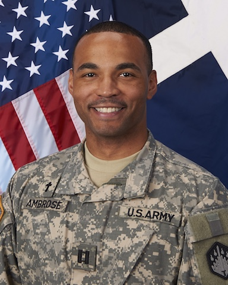

About Me
This is my first responsive web page design. Here I have a navigation area where you can click on other web pages I made. This week was not too bad at work so I was able to work about 20 hours on this one and get this homework turned in a day early.
About this picture: Well, I took a detour from tech to serve my country as a Chaplain. After lots of mentors in college persuaded me to be more loving, honest, and empathic, I decided to learn more about religion at a seminary. I was given a lot of new types of opportunities to serve and I felt the Army was the best overall fit for me.
I'm back to coding now. I think I understand all I need to know now to communicate, live a happy person, and thrive as a human being in society, so enjoy my code journey via this responsive layout. It's not too shabby, but quite professional.
I have a strong background and am dedicated to IT with over 10 years of management experience influencing logistics and products. While I was a Chaplain Officer, I considered myself a training specialist in general because all I did was taught people and groups almost everyday. For this reason, I am adept at overseeing large groups of people as well as multiple projects or systems.
Connect with Me